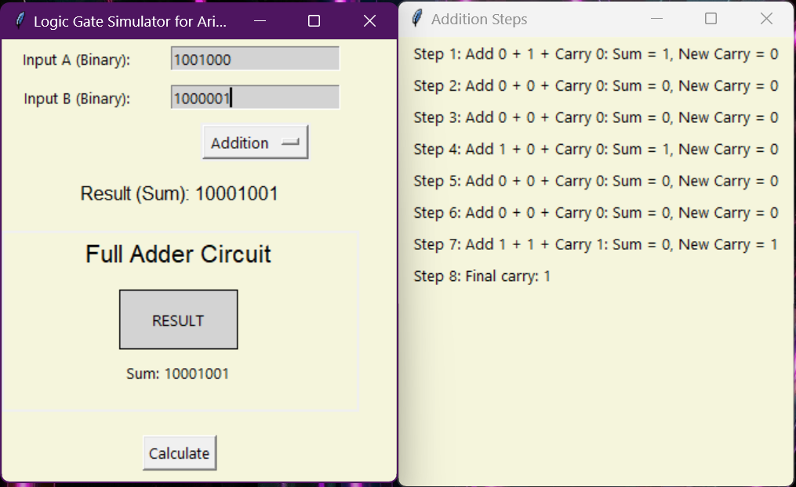

Binary Logic GUI App
This is a desktop GUI application built using Python's Tkinter module.
Features
- Addition, Subtraction, Multiplication of binary numbers
- Uses logic gate simulation (Full Adder, Subtractor, Multiplier)
- Shows step-by-step operation and circuit simulation
How to Run
git clone https://github.com/Kanishk101/binary-calculator.git
cd binary-calculator
python main.py
Executable
Download .zip containing the exe file (Windows)
Download the zip, extract, and run "binarycalculator.exe"
Screenshot
